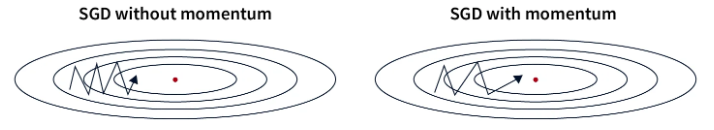

Comprendre les différents optimizers#
Dans le tout premier cours, nous avons introduit la descente du gradient. Il s’agit de l’optimizer le plus simple pour entraîner les modèles de deep learning. Dans les cours suivants, nous avons utilisé la descente du gradient stochastique par mini-batch ou Adam en fonction des scénarios.
L’optimizer permet d’ajuster les paramètres du modèle pendant l’entraînement dans un objectif de minimisation du loss. Le choix d’un bon optimizer est très important pour la performance du modèle ainsi que la vitesse de convergence de celui-ci.
Ce cours va vous présenter les différents optimizers existants (non exhaustif) ainsi que leurs avantages et inconvénients. En pratique, le meilleur optimizer est souvent Adam mais vous pouvez expérimenter avec d’autres optimizers et différentes valeurs de learning rate (la valeur optimale de learning rate n’est pas la même en fonction de l’optimizer choisi).
Ce cours s’inspire de ce blogpost pour les explications et reprend les figures.
Descente du gradient#
Commençons par un rappel sur l’algorithme de descente du gradient.
On peut simplement la définir de cette manière :
\(\theta = \theta - \alpha \cdot \nabla L(\theta)\)
où \(\theta\) correspond aux paramètres du modèle, \(L(\theta)\) est le loss sur l’ensemble des données et \(\alpha\) est le learning rate.
On peut résumer cette approche en une phrase simple : A chaque étape d’entraînement, on ajuste les paramètres du modèles pour minimiser le loss sur l’ensemble des données.
Voici une figure montrant l’idée derrière la descente du gradient :

C’est une approche très simple à implémenter et qui fonctionne très bien sur une petite quantité de données si on a bien choisi notre learning rate. Cependant, comme on calcule le loss sur l’ensemble de nos éléments avant d’ajuster les poids, cette approche est extremement lente pour les gros datasets et inutilisable en pratique. De plus, le choix du learning rate est très important et il faut être précis ce qui n’est pas toujours évident.
Descente du gradient stochastique#
Cette méthode adapte la descente du gradient pour des datasets conséquents. Au lieu de changer les paramètres après avoir vu toutes les données, on va calculer le loss sur une partie des données (un mini-batch) et ajuster les poids par rapport au loss calculé sur ce mini-batch. C’est de là que vient le terme stochastique : comme on ajuste les paramètres sur une partie des données, il est possible que ça ne diminue pas le loss sur l’ensemble des données. En pratique, après plusieurs itérations, le loss global diminue bien et le modèle converge beaucoup plus rapidement.
La formule est presque identique :
\(\theta = \theta - \alpha \cdot \nabla L(\theta;x^{(i)};y^{(i)})\)
où \((x^{(i)},y^{(i)})\) est un mini-batch de données.

Comme on le voit sur la figure, la pente n’est pas une ligne droite mais le modèle finit par converger au minimum global.
Cette méthode est beaucoup plus rapide que la descente du gradient classique surtout sur les gros datasets. Cela a aussi l’avantage de pouvoir échapper aux minimums locaux plus facilement (dû à l’instabilité du processus). Ce n’est cependant pas parfait à cause justement de l’instabilité et a besoin également d’un learning rate très bien choisi pour fonctionner de manière optimale.
Descente du gradient stochastique avec momentum#
Cet optimizer reprend l’idée de la descente du gradient stochastique mais en ajoutant un terme momentum. Comme son nom l’indique, c’est un terme qui permet de garder en mémoire la direction de l’optimisation précedente et de pousser l’optimisation actuelle à continuer dans la même direction. Ce terme est calculé et mis à jour via un exponentially decaying average. C’est très bénéfique pour palier au problème de gradient qui serait faible (une région plate).
La formule est la suivante :
\(v = \beta \cdot v + (1 - \beta) \cdot \nabla_\theta L(\theta; x^{(i)}; y^{(i)})\)
\(\theta = \theta - \alpha \cdot v\)
où \(v\) est appelé le vecteur de momentum et \(\beta\) est un hyperparamètre (calculé par exponentially decaying average) ajustant l’impact de la valeur actuelle.

En pratique, cela aide à passer les régions plates de la fonction de loss plus efficacement tout en augmentant la vitesse de convergence. Par contre, le choix du paramètre momentum est important car un momentum trop grand pourrait nous faire sauter la solution optimale. En pratique ce terme est choisi en fonction de la taille de votre mini-batch (batch size).
Exponentially decaying average : Méthode de lissage des données où chaque nouvelle valeur a un poids décroissant exponentiellement, donnant plus d’importance aux valeurs récentes tout en diminuant progressivement l’impact des valeurs passées.
Adagrad#
Adagrad est un optimizer qui ajuste le learning rate par paramètre pendant l’entraînement. Le learning rate de chaque paramètre est basé sur l’historique des gradients. L’idée est que les paramètres que l’on va ajuster souvent vont avoir un plus petit learning rate que les paramètres que l’on ajuste rarement.
La formule s’écrit de cette manière :
\(g = \nabla_\theta L(\theta; x^{(i)}; y^{(i)})\)
\(G = G + g \odot g\)
\(\theta = \theta - \frac{\alpha}{\sqrt{G + \epsilon}} \odot g\)
où \(G\) est la matrice qui accumule le carré des gradients (le carré pour éviter les valeurs négatives) et \(\epsilon\) est une petite valeur pour éviter de diviser par 0.
C’est une méthode qui s’avère performante quand les données d’entraînement sont très différentes les unes des autres car cela va garantir un ajustement des paramètres en fonction de l’occurence. Cependant, on constate que le learning rate va baisser sans arrêt ce qui peut conduire à une convergence très lente et même une non-convergence si le learning rate devient trop petit avant la fin de l’optimisation.
RMSProp#
RMSProp se base sur la même idée que Adagrad mais corrige une partie des inconvénients. Au lieu de diminuer le learning rate de manière au fûr et à mesure de l’entraînement, RMSProp utilise un exponentially decaying average sur les carrés des gradients au lieu de prendre la somme comme le faisait Adagrad. Cela va corriger le problème principal d’adagrad qui est la diminution du learning rate sans retour en arrière possible.
La formule de RMSProp est la suivante :
\(g = \nabla_\theta L(\theta; x^{(i)}; y^{(i)})\)
\(G = \beta \cdot G + (1 - \beta) \cdot g \odot g\)
\(\theta = \theta - \frac{\alpha}{\sqrt{G + \epsilon}} \odot g\)
où \(\beta\) est le paramètre pour la gestion de l’exponentially decaying average.
Les avantages sont les même qu’adagrad sauf que la convergence est plus rapide. Cependant, parfois ce n’est pas suffisant et cela converge trop lentement.
AdaDelta#
AdaDelta est un optimizer assez similaire à RMSProp sauf que celui-ci n’a pas besoin d’un learning rate en hyperparamètre. Pour compenser cela, adaDelta utilise un exponentially decaying average sur les gradients et les carrés des gradients pour determiner une valeur d’ajustement cohérente.
La formule d’adaDelta est la suivante :
\(g = \nabla_\theta L(\theta; x^{(i)}; y^{(i)})\)
\(G = \beta \cdot G + (1 - \beta) \cdot g \odot g\)
\(\Delta\theta = - \frac{\sqrt{S + \epsilon}}{\sqrt{G + \epsilon} } \odot g\)
\(S = \beta \cdot S + (1 - \beta) \cdot \Delta\theta \odot \Delta\theta\)
\(\theta = \theta + \Delta\theta\)
où \(G\) est la matrice qui accumule les gradients et \(S\) est la matrice qui accumule le carré des ajustements.
C’est une méthode assez intéressant car elle ne nécessite pas de choix de learning rate. Cependant, elle peut converger assez lentement et le learning rate calculé peut devenir trop petit ce qui causerait un arrêt de l’entraînement.
Adam#
Adam est probablement l’optimizer le plus utilisé aujourd’hui. Adam combine les idées de la descente du gradient avec momentum et de RMSProp. Adam utilise un exponentially decaying average sur les gradients et sur les carrés des gradients pour modifier le learning rate comme RMSProp. Adam calcule aussi un momentum pour permettre une optimisation plus rapide.
La formule est la suivante :
\(g = \nabla_\theta L(\theta; x^{(i)}; y^{(i)})\)
\(m = \beta_1 \cdot m + (1 - \beta_1) \cdot g\)
\(v = \beta_2 \cdot v + (1 - \beta_2) \cdot g \odot g\)
\(\hat{m} = \frac{m}{1 - \beta_1^t}\)
\(\hat{v} = \frac{v}{1 - \beta_2^t}\)
\(\theta = \theta - \frac{\alpha}{\sqrt{\hat{v}} + \epsilon} \odot \hat{m}\)
où \(m\) est le vecteur de momentum, \(v\) le vecteur de velocity, \(\beta_1\) le decay pour le momentum et \(\beta_2\) le decay pour la velocity.
Il s’agit de l’optimizer le plus rapide pour la convergence et il fonctionne bien sur des données bruitées. Par contre, il y a 3 hyperparamètres à définir ce qui peut être un peu lourd.
En pratique Adam fonctionne extremement bien et il est souvent nécessaire de ne modifier que le paramètre learning rate. Les valeurs par défauts de \(\beta_1\) et \(\beta_2\) ont rarement besoin d’être modifiées (sur pytorch elles sont par défaut à \(\beta_1=0.9\) et \(\beta_2=0.999\)). De plus, contrairement à la descente de gradient stochastique, un choix précis de learning rate n’est pas forcément indispensable pour obtenir une bonne optimisation.
Note : De manière générale, je vous conseillerais d’utiliser Adam ou AdamW (version améliorée de Adam) systématiquent comme optimizer par défaut. En fonction de votre problème, vous pouvez être amené à tester d’autres optimizers.
Autre note : En fonction de l’optimizer choisi, l’espace mémoire nécessaire lors de l’entraînement du modèle est différent. A l’heure où les gros modèle type LLM sont légions, c’est une information à garder en tête. Voici quelques indications sur le coût en mémoire en fonction de l’optimizer (\(n\) est le nombre de paramètres du modèles):
Coût en mémoire n : Descente du gradient stochastique (SGD)
Coût en mémoire 2n : SGD avec momentum, Adagrad, RMSProp
Coût en mémoire 3n : Adam et ses variantes (AdamW, AdaMax, Nadam)
Point sur le choix du learning rate#
Le choix du learning rate est très lié avec le choix de l’optimizer. Voici les situations possibles sur lesquelles on peut tomber en fonction du choix du learning rate :

Dans le premier cas, le learning rate est trop faible et la convergence du modèle va être lente. C’est couteux en terme de temps et d’argent.
Dans le second cas, le learning rate est bien choisi et il décroit assez vite pour atteindre le minimum de la fonction de loss. C’est cette valeur là que l’on cherche à trouver.
Dans le dernier cas, le learning rate est trop important et les ajustements des paramètres sont beaucoup trop important. Cela peut conduire à une non-convergence ou même une divergence du modèle.
Ces considérations sont très importantes pour le choix du learning rate lorsque l’on utilise la descente du gradient stochastique. Pour Adam, c’est un hyperparamètre important également mais la tolérance à l’erreur est plus importante car le learning rate est adapté dans l’optimizer.